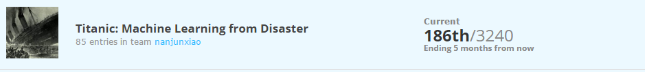
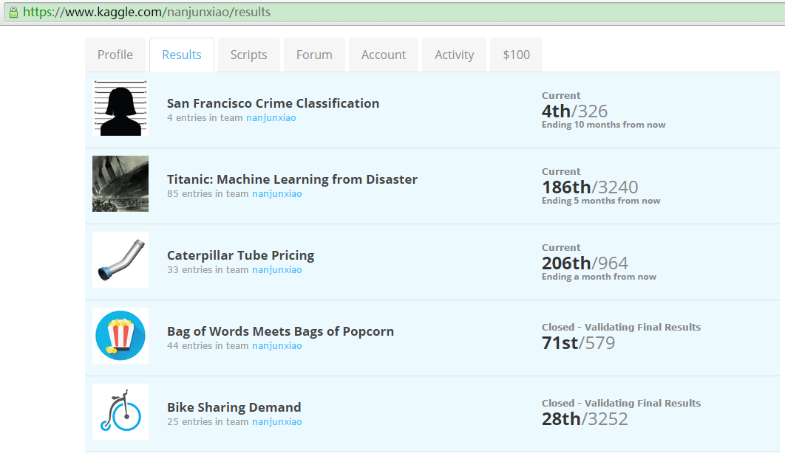

Kaggle实战(一)
第一次接触kaggle比赛，是在听完台大林轩田老师的机器学习基石和技法课程之后。都说实践出真知，为了系统的巩固下机器学习实战技能，成为一名合格的数据挖掘工程师，我踏入了kaggle大门。
参加比赛很耗费时间和精力，由于本人已经工作，只能利用业余时间有选择的参加，希望能从中学到东西。我选择的比赛都是有监督的学习（当然用到了非监督方法，比如Bag of Words Meets Bags of Popcorn就用到了Collapsed Gibbs LDA），概括起来就是分类/排序/回归。下面就跟大家分享下近两个月我参加的比赛，欢迎一起探讨。
工欲善其事，必先利其器
首先介绍下我经常使用的机器学习工具:
- scikit-learn. 涵盖了基本能想到的各种机器学习算法，由于本人python党，我把它当作matlab和R的替代品。
- xgboost. 华盛顿大学机器学习大牛陈天奇出品的GBRT框架，果然是刷比赛利器。
- liblinear/libsvm. 台大林智仁团队的佳作，工业界很多也在用。
- pandas. 处理数据python包，DataFrame那叫一个好用。
机器学习流程
拿到一个比赛，我的一般套路是：
- 读懂比赛介绍，明确是哪类问题:分类/排序/回归。
- 数据特征处理。这个是最耗时也是最重要的，正所谓“数据和特征决定了效果上限，模型和算法决定了逼近这个上限的程度”。其实这点我还有很大欠缺，汗！
- Cross validation数据集切分。数据集很大完全可以hold out一份作为测试集（不是待提交结果的测试集，此处是用来CV的），数据集偏小就需要K-fold或者Leave-one-out了，如果训练集有时序关系，还要注意测试集选取最后时间片的。这点我自我批评，有时为了省事，直接就提交结果做CV了。咳咳，这有点像imagenet比赛作弊了，只是我没用小号增加提交次数。
- 常用算法/默认参数跑结果作为baseline。这个需要一些经验和直觉，一般来说Tree Based的Random Forest和GBRT效果都不会太烂，如果特征维度很大很稀疏这时就需要试试线性SVM和LR了。
- 接下来就是调参了，这个我也没用太多经验，一般就是GridSearchCV或者RandomizedSearchCV。有人推荐Hyperopt库，接下来调研下。
- 迭代。为了取得比较好的结果，下面就是2/3/4/5不断迭代了。
- Blending.上面说的都是单模型，最后让你结果更general/low variance，提升一个档次的就是结果ensemble了（不是指gbrt/rf的ensemble，是多种模型的融合）。这里我一般就是简单的多种模型结果的averaging（weighted）or voting，这里推荐一篇ensemble selection paper(http://www.cs.cornell.edu/~alexn/papers/shotgun.icml04.revised.rev2.pdf)。
比赛实战
1. Bike Sharing Demand
Forecast use of a city bikeshare system. https://www.kaggle.com/c/bike-sharing-demand
这是一个回归问题，最后预测租车数量。这里需要注意一点，最后总数实际等于casual+registered。原始共10个特征，包括datetime特征，season/holiday等类别特征，temp/atemp等数值特征，没有特征缺失值。评价指标为RMSLE，其实就是RMSE原来的p和a加1取ln。
当时正在研究GBRT，所以使用了xgboost。由于使用RMSLE，xgboost自带的loss是square loss，eval_metric是RMSE，这时两种选择1.修改xgboost代码，派生新的优化objective，求新objective的gradient（一阶导）/hessian（二阶导），派生新的eval_metric；2.训练数据的y做ln(y+1)转化，最后预测时再做exp(y^)-1就转回来了。当然2简单了，我也是这么实施的。
关于数据特征处理，datetime转成y/m/d/h/dayofweek，y/m等类别特征由于有连续性，这里没有做one-hot编码。经过cv最后cut掉了日/season。
Xgboost参数其实没有怎么去调，shrinkage=0.1，tree_num=1000，depth=6，其他默认。
效果三次提升拐点分别是：1.RMSE转换为RMLSE(square loss转为square log loss)，说明预测值的范围很大，log转化后bound更tight了；2.cut了日/season特征；3.转换为对casual和registered的分别回归问题，在加和。最后RMLSE结果为0.36512，public LB最好为30位，最终private LB为28，还好说明没有overfit。

2. Bag of Words Meets Bags of Popcorn
Use Google’s Word2Vec for movie reviews. https://www.kaggle.com/c/word2vec-nlp-tutorial
这是一个文本情感二分类问题。25000的labeled训练样本，只有一个raw text 特征”review“。评价指标为AUC，所以这里提交结果需要用概率，我开始就掉坑里了，结果一直上不来。
比赛里有教程如何使用word2vec进行二分类，可以作为入门学习材料。我没有使用word embeddinng，直接采用BOW及ngram作为特征训练，效果还凑合，后面其实可以融合embedding特征试试。对于raw text我采用TfidfVectorizer(stop_words=’english’, ngram_range=(1,3), sublinear_tf=True, min_df=2)，并采用卡方检验进行特征选择，经过CV，最终确定特征数为200000。
单模型我选取了GBRT/NB/LR/linear SVC。GBRT一般对于维度较大比较稀疏效果不是很好，但对于该数据表现不是很差。NB采用MultinomialNB效果也没有想象的那么惊艳。几个模型按效果排序为linear SVC(0.95601)>LR(0.94823)>GBRT(0.94173)>NB(0.93693)，看来线性SVM在文本上还是很强悍的。
后续我又采用LDA生成主题特征，本来抱着很大期望，现实还是那么骨感，采用上述单模型AUC最好也只有0.93024。既然单独使用主题特征没有提高，那和BOW融合呢？果然work了!后面试验证实特征融合还是linear SVC效果最好，LDA主题定为500，而且不去除停用词效果更好，AUC为0.95998。
既然没有时间搞单模型了，还有最后一招，多模型融合。这里有一个原则就是模型尽量多样，不一定要求指标最好。最终我选取5组不是很差的多模型结果进行average stacking，AUC为0.96115，63位。最终private LB跌倒了71st，应该融合word enbedding试试，没时间细搞了。

3. Titanic: Machine Learning from Disaster
Predict survival on the Titanic. https://www.kaggle.com/c/titanic
硬二分类问题，不需要预测概率，给出0/1即可，评价指标为accuracy。说句题外话，网上貌似有遇难者名单，LB上好几个score 1.0的。有坊间说，score超过90%就怀疑作弊了，不知真假，不过top300绝大多数都集中在0.808-0.818。这个题目我后面没有太多的改进想法了，求指导啊~
数据包括数值和类别特征，并存在缺失值。类别特征这里我做了one-hot-encode，缺失值是采用均值/中位数/众数需要根据数据来定，我的做法是根据pandas打印出列数据分布来定。
模型我采用了DT/RF/GBDT/SVC，由于xgboost输出是概率，需要指定阈值确定0/1，可能我指定不恰当，效果不好0.78847。效果最好的是RF，0.81340。这里经过筛选我使用的特征包括’Pclass’,’Gender’, ‘Cabin’,’Ticket’,’Embarked’,’Title’进行onehot编码，’Age’,’SibSp’,’Parch’,’Fare’,’class_age’,’Family’ 归一化。我也尝试进行构建一些新特征和特征组合，比如title分割为Mr/Mrs/Miss/Master四类或者split提取第一个词，添加fare_per_person等，pipeline中也加入feature selection，但是效果都没有提高，求指导~

4. San Francisco Crime Classification
Predict the category of crimes that occurred in the city by the bay. https://www.kaggle.com/c/sf-crime
这是一个多分类问题，一般三种处理方法：one vs all, one vs one, softmax，信息损失逐渐递减。87809条训练数据，数据包括datetime/类别/数值特征，没有缺失值，label共39种。评价指标为logloss，这里要说下和AUC的区别，AUC更强调相对排序。
我抽取后特征包括year,m,d,h,m,dow,district,address,x,y，模型选择softmax objective的LR和xgboost。这两个模型对特征挑食，有不同的偏好，LR喜好0/1类别或者locale到0-1的数值特征，而xgboost更喜好原始的数值特征，而且对缺失值也能很好的处理。所以对于LR就是2个归一化的数值特征和8个待one-hot编码的特征，对于xgboost是8个原始数值特征（包括year/m/d等，具有连续性）和2个待one-hot编码的特征。
LR效果要略好于xgboost效果，logloss分别为2.28728/2.28869，最好位置为3rd，目前跌到4th，后面找时间再搞一搞。

5. Caterpillar Tube Pricing
Model quoted prices for industrial tube assemblies. https://www.kaggle.com/c/caterpillar-tube-pricing
这也是一个回归问题，预测tube报价。30213条训练样本，特征分散在N个文件中，需要你left join起来。评价指标为RMLSE，哈哈，是不是很熟悉？对，跟bike sharing的一样，所以怎么转换知道了吧？看，做多了套路trick也就了然了。感觉这个需要领域知识，但其实有些特征我是不知道含义的，anyway，先merge所有特征不加domain特征直接搞起。
这是我见过小样本里特征处理最麻烦的(后面的CTR大数据处理更耗时)，它特征分散在多个文件中，还好我们有神器pandas，直接left join搞定。这里有些trick需要注意，比如comp_*文件要用append不能join，这样正好是一个全集，否则就会多个weight特征了。特征存在缺失值，这里我全部采用0值，不知是否恰当？
模型我主要试了RF和xgboost，RF tree_num=1000，其他默认值，RMLSE=0.255201，主要精力放在了xgboost上，调了几次参数(depth=58,col_sample=0.75,sample=0.85,shrinkage=0.01,tree_num=2000)，最好RMLSE=0.231220，最好位置120th，目前跌倒206th了，看来需要好好搞搞特征了！

Join Kaggle
你看我搞的还凑合吧，so，快来加入kaggle吧，求组队:-)
